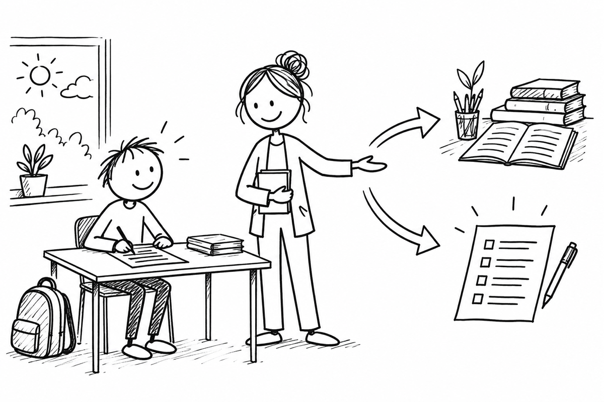

Fehlende Leistungsnachweise
Nachholen oder Leistungsstand feststellen.

Kann eine Schülerin oder ein Schüler eine Leistung aus nicht selbst zu vertretenden Gründen nicht erbringen, ermöglicht § 48 Abs. 4 SchulG das Nachholen und eine Prüfung zur Feststellung des Leistungsstands. In Sek I entscheidet die Fachlehrkraft nach § 6 Abs. 5 APO-S I über Nachholen oder Ersatz durch Prüfung, soweit das für die Feststellung erforderlich ist.
Für die Oberstufe sieht § 13 Abs. 5 APO-GOSt Gelegenheit zum nachträglichen Erbringen vor. Die Fachlehrkraft kann im Einvernehmen mit der Schulleitung den Leistungsstand durch eine Prüfung feststellen. Ein pauschaler Anspruch auf eine bestimmte Prüfungsform oder das in den Folien beschriebene Verfahren ergibt sich aus diesen Normen nicht.
Bei Krankheit oder versäumter Klausur zuerst Grund und vorhandene Bewertungsgrundlagen klären; anschließend eine rechtlich passende Nachholmöglichkeit festlegen.
Drei Fragen zu Beispielen
Klicke eine Karte an und vergleiche deinen Ansatz mit der Musterantwort.